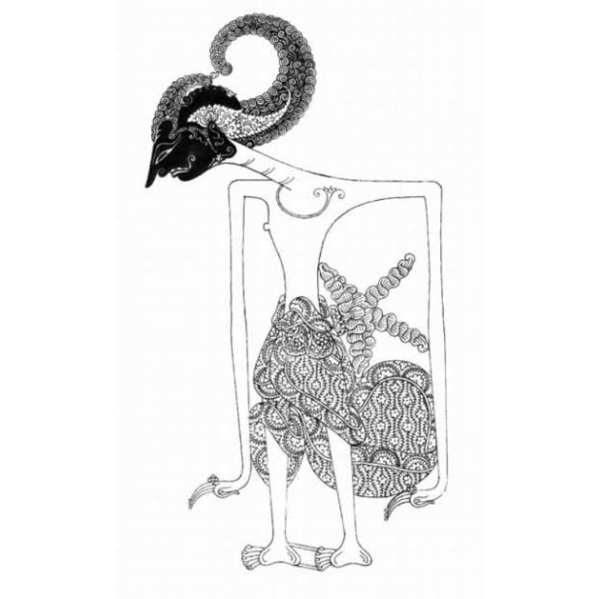
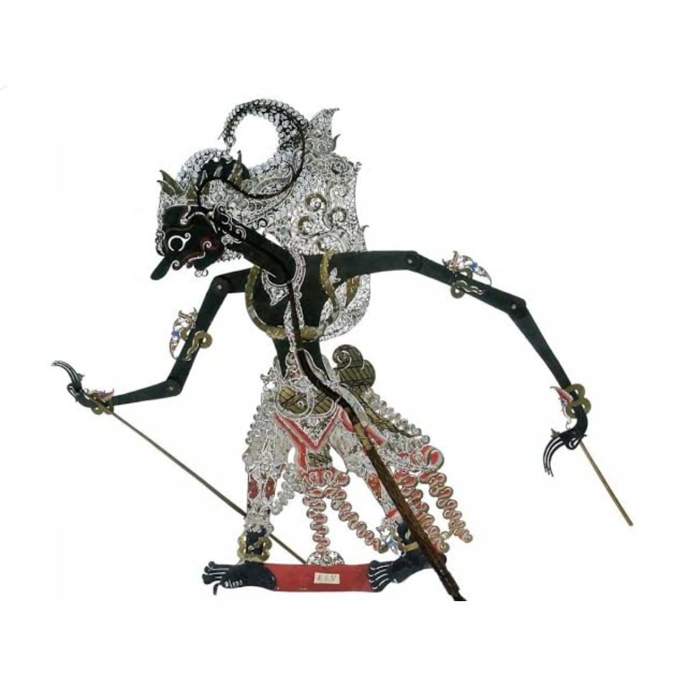
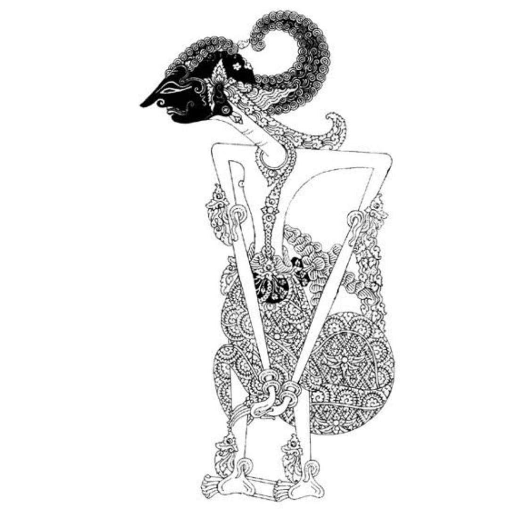
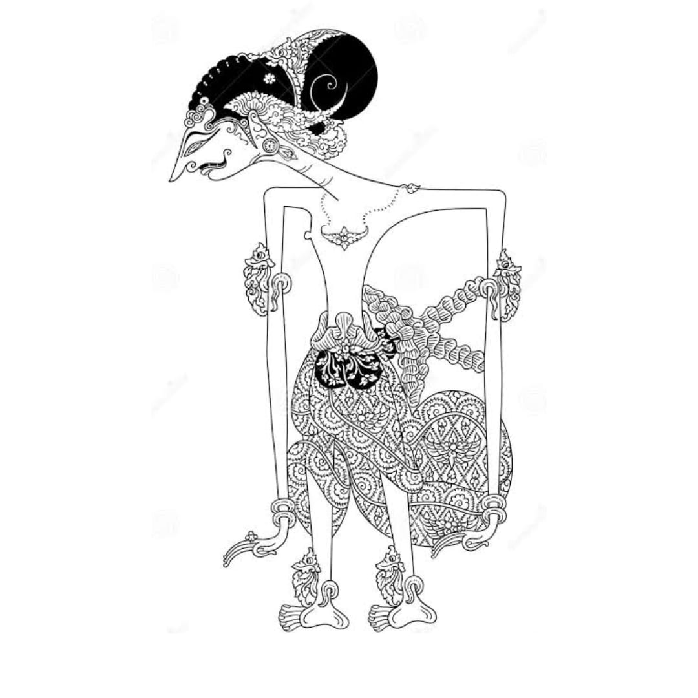

Abimanyu
Sakramajatmaja, Arjunatmaja
Antasena
Antareja
Arimbi
Hidimbi

Arjuna
Permadi, Janaka
Baladewa
Kakrasana
Bima
Bratasena, Werkudara
Bisma
Dewabrata

Drupadi
Pancali, Yadnyaseni
Dursasana
Duhsasana, Dushasana

Gatotkaca
Bhimasuta
Karna
Radeya, Basusena, Suryaputra
Kresna
Basudewa, Kanha, kesawa
Kunti
Pritha
Madri
Madrim

Nakula
Tripala

Pandhudewanata
Gandawakstra

Sadewa
Darmagranti
Sangkuni
Harya suman
Widura
Yamawidura
Wisanggeni
Bambang wisanggeni

Yudhistira
Puntadewa